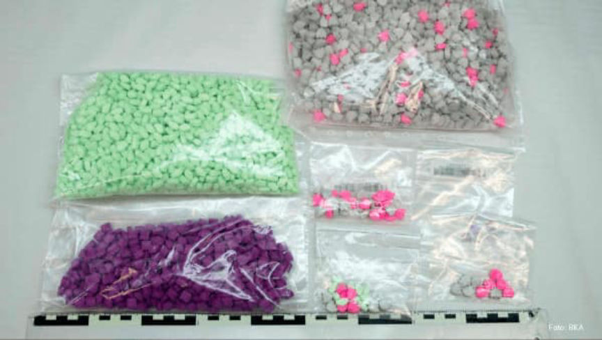
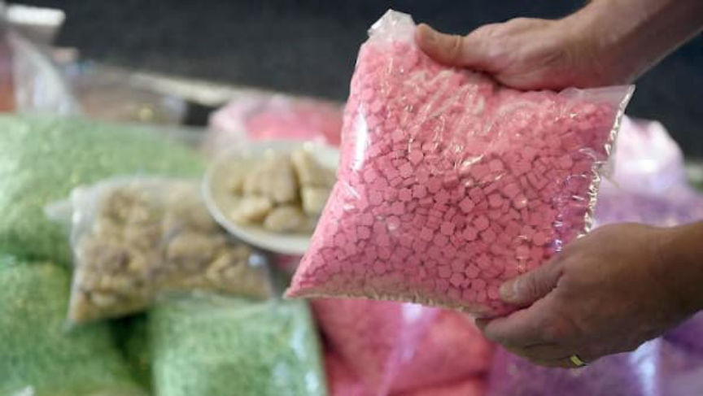
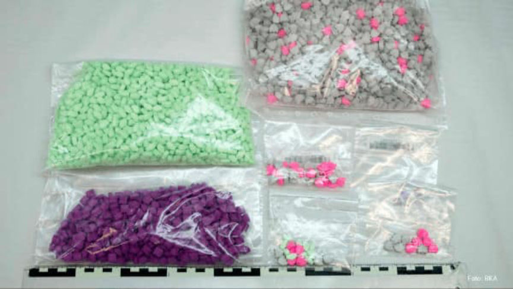
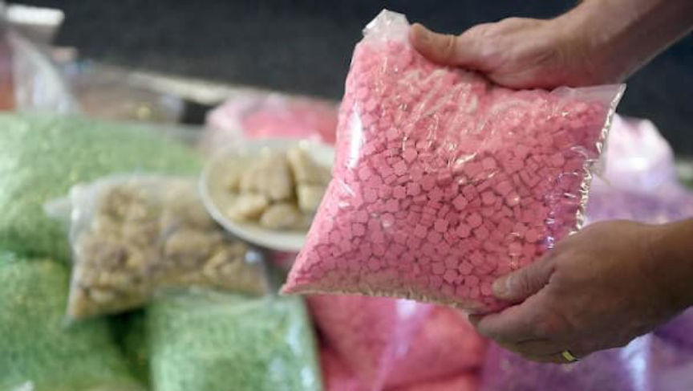

Eleven Indicted in Chemical Revolution Case
~3 min read | Published on 2020-02-28, tagged General-News, Indicted using 548 words.
Eleven suspects are now facing drug trafficking charges connected to an investigation into Germany’s largest online drug shop, Chemical Revolution. According to the Frankfurt Public Prosecutor, Chemical Revolution sold hundreds of kilograms of drugs and earned a profit of more than one million euros.
The “Chemical Revolution” shop was shut down as a result of a joint operation by the German Federal Criminal Police Office and the French criminal police. A 2018 drug trafficking arrest in Brandenburg set the Chemical Revolution investigation into motion; German authorities arrested a 26-year-old in Brandenburg who had close to 50 kilograms of amphetamine, 16 kilograms of cannabis, 2 kilograms of MDMA, 900 grams of cocaine, 600 grams of heroin, and many other substances in his possession. Investigators learned that the suspected drug trafficker had been storing drugs for Germany’s largest drug shop.

Chemical Revolution operated on the darkweb and on surface web.
The second suspect, a 43-year-old Dutchman suspected of procuring drugs in the Netherlands and organizing transportation to Germany, was arrested in Hamburg on February 13, 2019. His arrest led to the seizure of over a total of 14 kilograms of a variety of drugs. A 24-year-old German from Hamburg suspected of mailing the drugs sold by Chemical Revolution was arrested the same day.
On February 19, 2019, a 34-year-old Hamburg man was arrested. Authorities accused the man of renting apartments in Hamburg as a part of the Chemical Revolution operation. According to prosecutors, co-conspirators used the apartments as staging areas where they packaged the drugs and prepared them for shipment to customers. Authorities arrested a 26-year-old and a 25-year-old the same day. Both had allegedly helped package and ship drugs for Chemical Revolution.

A 35-year-old German from Teltow-Fläming allegedly organized the transport of the drugs from the Netherlands to Germany for resale. Police arrested him on February 25, 2019. On February 28, 2019, a 44-year-old Polish man was arrested in Diepholz. He is also suspected overseeing the transport of narcotics to Germany. On March 27, 2019, the police arrested another package courier–a 32-year-old Polish man was arrested in Poland. German authorities won the extradition case and had the man in custody in Germany on April 12, 2019.
German police arrested a 29-year-old man from Hamburg on April 29, 2019. Authorities accused the 29-year-old of overseeing the transportation of drugs between different Chemical Revolution co-conspirators.
Law enforcement in Spain arrested a 26-year-old German man on May 28, 2019. German authorities accused the 26-year-old of creating and managing the accounts and sites used by Chemical Revolution. The suspect also managed the organization’s funds, according to prosecutors.
In addition to the Chemical Revolution charges, some of the suspects face charges for allegedly selling drugs on Wall Street Market. In total, Chemical Revolution sold and shipped more than 130 kilograms of amphetamine, 42 kilograms of cannabis, 17 kilograms MDMA, 6 kilograms of cocaine, one kilogram of heroin, as well as an unknown number of LSD blotters. Seven of the eleven suspects have been in police custody since their arrests. Court dates have not yet been announced.
BKA: Photo gallery of the Chemical Revolution seizures “The Website” (PDF
BKA: Photo gallery of the Chemical Revolution seizures “Narcotics” (PDF)
BKA: Photo gallery of the Chemical Revolution seizures “Commerce and Logistics” (PDF)
The “Chemical Revolution” shop was shut down as a result of a joint operation by the German Federal Criminal Police Office and the French criminal police. A 2018 drug trafficking arrest in Brandenburg set the Chemical Revolution investigation into motion; German authorities arrested a 26-year-old in Brandenburg who had close to 50 kilograms of amphetamine, 16 kilograms of cannabis, 2 kilograms of MDMA, 900 grams of cocaine, 600 grams of heroin, and many other substances in his possession. Investigators learned that the suspected drug trafficker had been storing drugs for Germany’s largest drug shop.

Bags of ecstasy Pills Seized by the BKA | BKA
Chemical Revolution operated on the darkweb and on surface web.
The second suspect, a 43-year-old Dutchman suspected of procuring drugs in the Netherlands and organizing transportation to Germany, was arrested in Hamburg on February 13, 2019. His arrest led to the seizure of over a total of 14 kilograms of a variety of drugs. A 24-year-old German from Hamburg suspected of mailing the drugs sold by Chemical Revolution was arrested the same day.
On February 19, 2019, a 34-year-old Hamburg man was arrested. Authorities accused the man of renting apartments in Hamburg as a part of the Chemical Revolution operation. According to prosecutors, co-conspirators used the apartments as staging areas where they packaged the drugs and prepared them for shipment to customers. Authorities arrested a 26-year-old and a 25-year-old the same day. Both had allegedly helped package and ship drugs for Chemical Revolution.

More ecstasy seized by the BKA | BKA
A 35-year-old German from Teltow-Fläming allegedly organized the transport of the drugs from the Netherlands to Germany for resale. Police arrested him on February 25, 2019. On February 28, 2019, a 44-year-old Polish man was arrested in Diepholz. He is also suspected overseeing the transport of narcotics to Germany. On March 27, 2019, the police arrested another package courier–a 32-year-old Polish man was arrested in Poland. German authorities won the extradition case and had the man in custody in Germany on April 12, 2019.
German police arrested a 29-year-old man from Hamburg on April 29, 2019. Authorities accused the 29-year-old of overseeing the transportation of drugs between different Chemical Revolution co-conspirators.
Law enforcement in Spain arrested a 26-year-old German man on May 28, 2019. German authorities accused the 26-year-old of creating and managing the accounts and sites used by Chemical Revolution. The suspect also managed the organization’s funds, according to prosecutors.
In addition to the Chemical Revolution charges, some of the suspects face charges for allegedly selling drugs on Wall Street Market. In total, Chemical Revolution sold and shipped more than 130 kilograms of amphetamine, 42 kilograms of cannabis, 17 kilograms MDMA, 6 kilograms of cocaine, one kilogram of heroin, as well as an unknown number of LSD blotters. Seven of the eleven suspects have been in police custody since their arrests. Court dates have not yet been announced.
BKA: Photo gallery of the Chemical Revolution seizures “The Website” (PDF
BKA: Photo gallery of the Chemical Revolution seizures “Narcotics” (PDF)
BKA: Photo gallery of the Chemical Revolution seizures “Commerce and Logistics” (PDF)